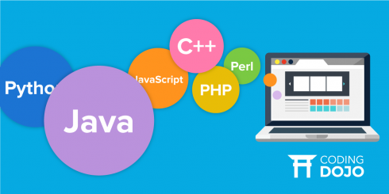

A programming language is a computer language programmers use to develop software programs, scripts, or other sets of instructions for computers to execute. Although many languages share similarities, each has its own syntax. Once a programmer learns the languages rules, syntax, and structure, they write the source code in a text editor or IDE. Then, the programmer often compiles the code into machine language that can be understood by the computer. Scripting languages, which do not require a compiler, use an interpreter to execute the script. 